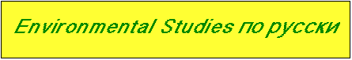

Environmental Studies Russian Style

Environmental Studies Russian Style
Thomas R. Beyer, Jr.
Middlebury College
What follows is an experiment in Internet based learning, a mini-course that combines Russian language content from the field of Environmental Studies, with guides to using the Internet to search, access and read Russian sources. The course is intended for approximately four weeks of instruction, meeting with an instructor once or twice weekly, but maybe utilized for individualized instruction.The course has primarily been designed for advanced studetns of the language, i.e. those at or beyond the Intermediate High level on the ACTFL scale (1+ on the ILR scale). This normally requires several years of study including some significant time spent in a Russian speaking country.Studetns who are less porioficient may still sue the course using the tasks indicated by That's to hard!!
The material is broken down into the following major areas:
Lesson 1 Configuring your computer and browser to read and type Russian.
Russian search engines. Russian aides-General and specific dictionaries .
Lesson 2 The major environmental issues in Russia-what are their concerns?Ĺ
Lesson 3 Specialization-picking your own area.
Lesson 4 The research report- and you are on your own.
Lesson 1Read and Write Russian
1) Assignment
a. Download and install Russian fonts (1/2 hour)
You may already be able to read and write Russian your computer and to understand web pages from Russia. The topic is, however, a bit complicated by the different types of computers (Windows or Mac based) and the different browsers (Internet Explorer or Netscape Communicator) and their own different versions and latest updates. Briefly stated you need to acquire and install Russian fonts and then configure or set your browser to recognize those fonts. The links below should get you started. Your first assignment is to follow the directions, set up your computer. Note-if this is a bit too complicated for you, seek some assistance from your computer support people!
To configure your computer to read and write Russian, press here for Windows or here for Macintosh
or Russian typing and keyboards
b. Locate and print a web page in Russian. You might choose something simple like http://www.msnbc.ru. Check out the sections on technology, business and health. (1/2 hour)c. Identify one brief article (100-200 words) of relevance and translate it from Russian into English. (1 hr)
That's too hard!!!
- Look at the different categories.
- Find twenty words that are similar in Russian and English.
- Find another ten words in Russian you do not understand and look them up in a Russian-English dictionary.
(Hint: You can copy the words from the text and paste them into a Russian-English web dictionary)
Using Search Engines
There are a number of search engines in English, www.yahoo.com, www.altavista.com, www.snap.com, www.go.com and those located at the home page of your browser. You can and should use them to expand your searches. For this lesson, however, we are concerned with learning how to use Russian search engines.
2). Assignment
Make a list of ten Russian language sites dedicated to environmental issues. (1 hr)
Follow each of the links and prepare an annotated list describing the content of the page, whether it contains links to other resources and a personal judgement as to its usefulness, according to the model provided.
Title Federal Organs of Power of the Russian FederationLink URL http://www.gov.ru/main/ministry/isp-vlast47.html
This is the official website of the Ministries of the Russian Government. It contains links to several ministries and commissions, such as the Ministries of Agriculture, Energy, and the Committee or Bureau of Statistics. Some pages may require you to encode. Note that any ministries do not have links or separate home pages.
Hints:
- You can navigate through www.rambler.ru or www.list.ru either by clicking on categories, such as "science"
- You can also type in a word into the search box-such as the Russian word for: pollution.
- You might want to type the Russian word into your "notepad" then copy and paste into the search box.
- Try typing the English word into an English-Russian on-line dictionary. Then copy and paste the appropriate Russian word into the search box.
- Or if you see the word in another Russian text, copy and paste it.
Research aids
Assignment (1/2 hour) We have noted a few sources or resources for electronic assistance.If you have not tried them all, make their acquaintance now:
Dictionaries:
- English-Russian
- Russian-English
- Glossary of Environmental Terms (windows machines only)
Grammars:
Russian Alphabet
- Alphabet in Signs
- Alphabet Stack (Macs only)
Search Engines
Summary
- Install fonts, configure browser (1 hour)
- Locate, print Russian web page and type a paragraph of Russian text.(1/2 hour)
- Translate article or prepare list of Russian-English words.(1 hour)
- Use search engine(s). Do annotated links.(1 hour)
- Familiarize oneself with research tools.(1/2 hour)
Lesson Two
Russian Environmental Issues
Ecology, Economics and Politics
1. Assignment (2 hrs)
Read and Translate/ Summarize text on "Ecology, Economics and Politics" in folder
Hint: You can and should first skim the text for relevant in formation. Do this by examining and translating to yourself the title. Think for a moment:
- What is this article likely to be about?
- Who is speaking/writing, what issues does (s)he identify?
- Are any solutions or conclusions offered?
You should read carefully and understand (can you translate them to yourself) the first and last sentence of each paragraph.
That's too hard!!
Examine the title! Are these words related to English? Can you understand them?
Look at just the title and first two paragraphs.
- Underline any words you may already know, or that seem familiar to English words and concepts you know. These might be cognates, or because of what you know of environmental studies, familiar concepts.
- Highlight in one color the verb of the sentence.(Remember Russian doesn't need the verb "to be" in the present tense.) In the present or future tense this will help identify the subject by number (singular and plural) and person (first, second, third). The past tense form of the verb can identify the number and gender in the singular of the subject.
- Use a different color to identify the subject of the sentence (normally in the nominative or naming case).
- Now think through the following questions, which can be
answered regarding the article:
- Who or what is the actor or agent (the subject)?
- What is he/she/it doing? (the verb)
- Where? When? Why and How does this action take place?
If you still have some time, try associating adjectives or modifiers with the respective nouns, and adverbs with the verb, adjective or other adverb which they modify. Remember that adjectival modifiers agree with the noun in gender, number and case. Adverbs have forms that do not change.
2) Assignment (1 hr)
Identify some of the major environmental issues facing Russia today. Prepare a brief outline giving the English and Russian word(s).
Tip: Scan several articles in English on environmental topics relevant to Russia. Skim the book Ecocide in the USSR : health and nature under siege by Murray Feshbach (1992)
Scanning means to read quickly trying to locate and identify words of significance. You might concentrate for example on such words/phrases as: pollution, conservation, clean up, population issues, atomic energy, coal and gas, (hazardous) waste disposal, acid rain, etc.
3. Assignment (2 hrs)
Search and identify several sites (at least five) in Russia that relate to environmental issues. Then prepare an annotated list of at least ten web pages useful for us to follow. Be sure to follow through on some of the links, checking both the viability of the links (do they still work) and their usefulness. Submit the list as Word document ort use a web page editor and mount the page containing live links top your own web page and provide us with the location.
4. Assignment (1 hr)
- Read the article on Baikal today (also in cache)
- Type a 250-word summary in Russian of the issues discussed.
That's too hard!!!
Read and then summarize in English.
That's still too hard!!!
Examine carefully the first paragraph. Using the technique discussed above, identify the key issues and answer as many questions as you can: Who, what, where, when, why, how? Provide a translation from Russian to English of fifteen to twenty key words.
Lesson Three
Specialization
Researching a Topic or an Area
This week you will select your own topic: it may be a theme (solid waste disposal problems) or an area (the Chernobyl region) for an eventual research project/report on an environmental issue of interest to you.
1. Assignment: Search-identify-read-take notes-outline (6 hrs)
- Search either by theme or word, use both English and Russian search engines. You might for example search out information on global warming or Russian environmental legislation, or on a geographical area, Lake Baikal, the cities of Moscow or St. Petersburg, Chernobyl. If you have nothing specific in mind, read the following articles or search these regions.
- Determine your specific your research interest and then identify at least five sites/articles devoted to that issue. Save and annotate the sites as you did in Lesson one
- Read and translate the titles and the key thematic (1st and last) sentences.
- Outline in Russian/English the issue(s)/problem(s), the data/findings/arguments, and the solution/conclusion.
That's way too hard!!
- Search and identify five sites that are in both English and Russian.
- Annotate them based on the quality of the English language version.
- Compare to and describe the Russian language resources.
- Are there direct translations of key words and documents, or are they different?
- (Don't be reluctant to use a dictionary!)
- Select and prepare for your own paper topic.
- Use four English language sources and one in Russian.
- Outline in English the issue(s)/problem(s), the data/findings/arguments, and the solution/conclusion.
Lesson four
Your final project
After a review of your materials and comments from the instructor, your final assignment is as follows:
- 1. A five-page paper in English on your environmental issue, with translations along with citation and quotation of the original Russian sources.
- 2. A one-two page typed summary in Russian that will serve as the basis for your oral presentation of your paper.
- 3. An electronic outline (Power Point or web page) of your presentation and paper with live links to resources you have used on this project
A final note: While this course has been designed primarily for students of Middlebury College, instructors of other institutions may make use of the materials with appropriate recognition (please contact me). Those who are working through the course independently are welcome to submit their materials to me for my comments and suggestions. E-mail the projects to tom.beyer@middlebury.edu.